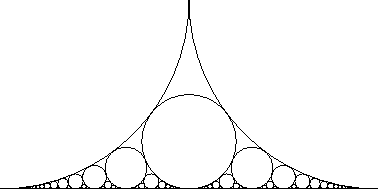

Math 55a: Honors Abstract Algebra
10-11:30 Tu Th / Science Center 216
Harvard University - Fall 2008

 Instructor:
Curtis T McMullen
Texts:
Instructor:
Curtis T McMullen
Texts:
- Required: Axler, Linear Algebra Done Right, Springer, 1997.
- Required: Artin, Abstract Algebra, Prentice-Hall, 1991.
- Recommended: Halmos, Naive Set Theory, Springer-Verlag, 1974.
- Also useful: Halmos, Finite-Dimensional Vector Spaces, Springer-Verlag, 1987.
- Also useful: Fulton and Harris, Representation Theory: A First Course, Springer-Verlag, 1991.
Prerequisites:
Commitment to a demanding course, strong interest in mathematics,
and familiarity with proofs and abstract reasoning.
Topics.
This course will provide a rigorous introduction to
abstract algebra, including group theory and linear algebra.
This course covers the equivalent of Math 25a and 122, and prepares
students for Math 123 and other advanced courses in number theory and algebra.
(A course in analysis such as 25b or 55b is recommended for the
Spring semester.)
Reading and Lectures.
Students are responsible for all topics covered in
the readings and lectures.
Assigned material should be read before
coming to class. Lectures may go beyond the
reading, and not every topic in the reading will be
covered in class.
Absorbing new or additional topics through independent study is an important
part of the course.
Homework.
Homework will be assigned every week.
It is due at the beginning of class.
Late homework will not be accepted.
Collaboration between students is encouraged, but you must write your own solutions, understand them and give credit to your collaborators.
Please use only the texts and your course notes for homework.
Midterms.
There will be two in-class, one hour midterms,
in October and November.
The first midterm is held early, to assist students in deciding
to add or drop the course.
Final.
There will be a take-home final exam, to be completed
during reading period.
Grades.
Grades will be based on homework (30%), in-class midterms (30%) and the
take-home final (40%).
Calendar 2008-9.
- Tu, 16 Sep. First class
- Tu, 7 Oct. First midterm
- Tu, 14 Oct. Final add/drop day
- Tu, 11 Nov. Holiday (Veteran's Day)
- Th, 20 Nov. Second midterm
- Th-F, 27-28 Nov. Thanksgiving
- Tu, 16 Dec. Last class
- F-M, 2-12 Jan. Reading period